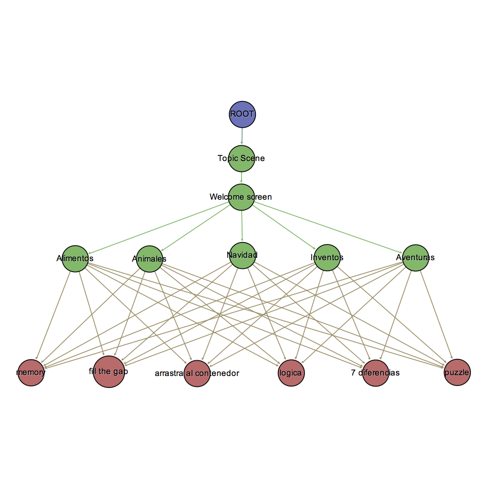

Content Graph¶
The content graph is a definition of how game scenes are arranged. Also establishes a relation with cognitive concepts developed during the session of a player. This graph is non-mutable as per content version, menaning that is a contract between the content developer and Infantium. This graph can extended or altered with new content update releases but doing a content graph update requires submitting content for approval to Infantium.
The game graph is internally defined at Infantium in a per content manner. The developer will be informed in which cognitive game scenes his content will be arranged in order to make content cognitive data from player to flow to Infantium servers.
{kind=link}
Content graph example where each content node has an unique identifier label.
Graph Walker¶
A walker represents the flow for an Infantium player through the transcurse of a content session in which cognitive improvement tasks will be performed. It is in charge of traversing the content graph, collecting cognitive data and data analytics.
It’s usage is simple, starting a game session creates a clean graph walker for an specified content, then the developer only needs to add code lines when a game scene transition occours. Then the analytics and networking part are done magically in a separate background thread.
Player¶
An Infantium Player refers to a unique identity of a user executing an Infantium Session. As defined by means of collecting user data, each session must be identified with a player to know from who the data we collect is talking about. This process is done automatically if the Infantium App is installed on the same device of the hosted content (now only Android is supported in this task), but there are some cases in which player is requested to be identified before content consumption even though is is not the normal case.